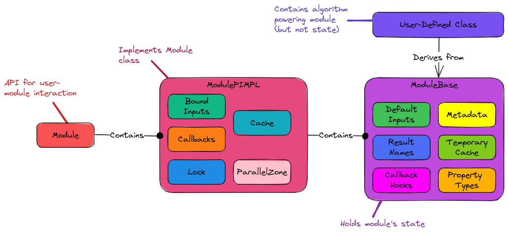

Designing the Module Component
The Designing the Call Graph Component section motivated the need for a module component (although the fact that we’ve written “module” like a thousand times by now ought to have suggested it too…).
What is the Module Component?
See Module for PluginPlay’s definition of a module. The module component is primarily responsible for interfacing PluginPlay to the algorithm the module developer wrote.
Module Component Considerations
- User interface.
Stemming from Designing the Call Graph Component, one of the motivating factors for the module component is to provide a mechanism for a user to interface their algorithm with PluginPlay.
- Memoization.
Also stemming from Designing the Call Graph Component, caching/memoization of a module is the responsibility of the module component.
Ideally largely automated
Developers may need mark modules as incapable of being memoized when they are not sufficiently “pure” (i.e., they have side effects, are non-deterministic, and/or depend on global input).
- Have a construction phase.
Modules will ultimately be classes. The construction phase will happen in the constructor and may include:
Used by developer to register the module’s metadata.
Also can initialize constant state needed by the module.
- Expose a
runhook. As agreed upon in Designing the Call Graph Component, executing a module happens by calling a
runmember. Members of the module component must expose such a member.The
runmember should contain minimal branching. Traditional if/else logic needed for determining what function to run should be handled by selecting submodules ahead of time.
- Store callback points.
The graph only works if nodes can call other nodes. Modules must be able to call sub-modules, which requires somehow being able to hold the submodules.
Module Component Design

Fig. 9 Module component design showing the contact points. Users of the
module go through the Module class API. PluginPlay interacts with
the user of the module via the ModulePIMPL class and the module developer
via the ModuleBase class. Module developers interact with the component
by deriving from ModuleBase.
The design of the module component is shown in Fig Fig. 9. The subsections below go over the major pieces in more detail.
Module Development
Following traditional object-oriented practices module developers implement
modules by deriving from the ModuleBase class. In the constructor of their
module, module developers set the property type(s) their module satisfies,
any additional inputs/results (beyond those specified by the property type),
callback hooks used throughout, and the metadata (version, author, papers to
cite, etc.). The actual state provided in the constructor is stored in the
ModuleBase part of the object and preserved in the state provided. When
users change inputs, or callbacks the user’s requests are actually stored in
the ModulePIMPL.
The other half of implementing a module is done when the module developer
overrides the run_() member. This member is assumed to be a pure function
(a pure function always returns the same results for the same inputs, and has
no side-effects). PluginPlay helps enforce this assumption by making the
run_() member const. The need for a pure function is brought on by the
desired black-box nature and for memoization purposes. To be treated as a black
box the module must receive no “hidden” inputs including from global variables,
files, or state not registered with PluginPlay. In practice, particularly when
considering modules meant to be called iteratively, a module may need access
to modifiable state. This is where the “Temporary Cache” comes in. The derived
class is able to put/get data in/out of the temporary cache using a key-value
system.
Summary
The above design specifically addresses the stated considerations by:
Module developers inherit from
ModuleBaseand fill in the virtualrun_member.Metadata for the module can be registered with
ModuleBase(and thus PluginPlay) in the derived class’s ctor.
ModulePIMPLperforms memoization.
Derived classes use their constructor to set meta-data.
Moduleexposes therun(and more usefulrun_as) which executes the module.
ModuleBaserecords the hooks (property types and associated tag) for each call back location.
ModulePIMPlholds the bound callbacks for each hook.